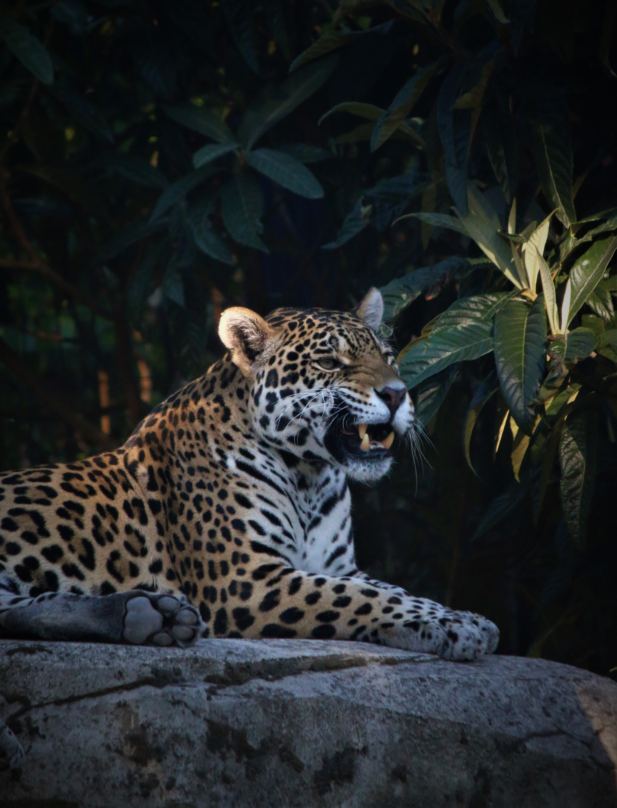

Amazon Rainforest
The Amazon is the largest rainforest in the world with it having over a 10th of all known species in the world.
It is threaten by illegal resource overextraction, for example, logging and over fishing. These are unsustainable
and will cause the collapse of the ecosystem. A major threat is forest fires, with it releasing tons of CO2, it
increases the intensisty of future fires. These are major threats that are affecting the people and biodiveristy
Over 40 million people rely on the amazon and so does the world to prevent a climate crisis.
Adopt a Jaguar
Jaguars are nearly threatherd in the amazon. They're found most in the amazon. However due to the rapid decline
in the amazon, the population is decreasing Illegal trade is hurting the population further withn not enough aid
to counteract this activity.
To help you can adopt a jaguar with WWF. Every month a payment will be
made which is cruical in the survial of the species.
Donate
Adopt a 3 toed Sloth
A major threat to these animals is habitat loss as they live in trees. They are an important part of the
balanced ecosystem. They don't move very fast so can't get away from danger. Their population is directly
correlated to the health of the rainforest.
You can help by donating at WWF or adopting one, which
will keep them at a stable population.
Donate
